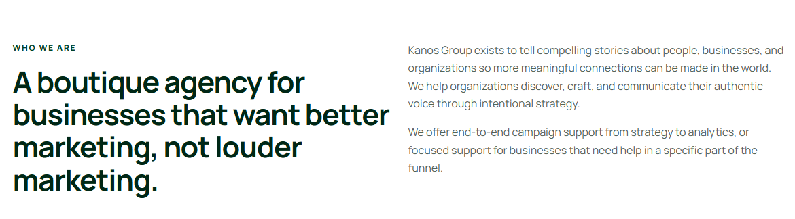
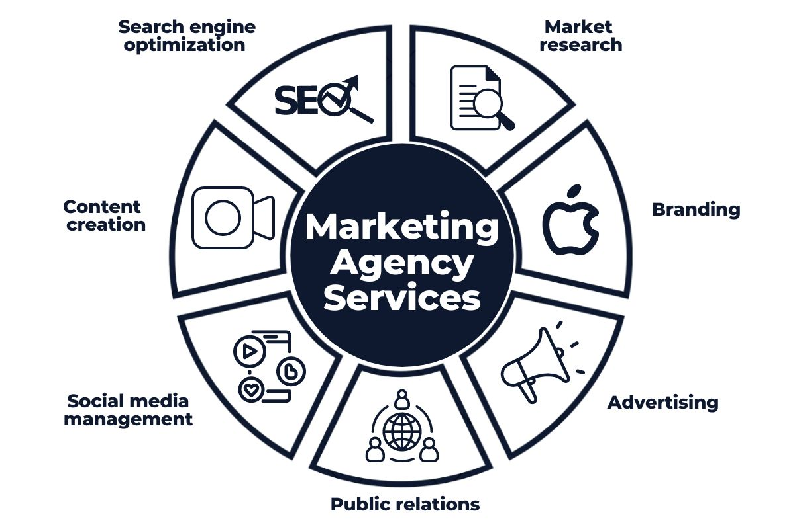

Feedback
On the Home Page
- Change tagline. New tagline is “Turning experiences into stories”
- Use the logo and initials I sent you in the brand assets everywhere you can
- The logo and the tagline should be big on the home page (CLICK HERE FOR BRAND ASSETS - https://drive.google.com/file/d/1WGiDG9IGSbXqHWzNWcZmcjer0cDtcwjh/view?usp=drive_link)
- USE THIS LOGO AND INITIAL (on page 4 in the link above):
- Use more colors: use the #004225 as the primary color and use other colors in brand assets where you can. Play around and see what works. There’s cream, burgundy, light blue, and lighter/darker shades of green.
- Underneath the logo and tagline, write: “Welcome to Kanos Marketing, your boutique agency committed to bringing your story to life by connecting your identity to your audience.” You can use this photo as a backdrop (put the name in the sky using color #c2b09d if possible. Play around with colors in brand assets):
- Make sure you use the font Fenice Pro ITC Regular for all regular text and the bold version for headlines
- Under “Who We Are” - put mission and vision statement there
- MISSION STATEMENT
Our mission is to help small businesses and organizations discover, craft, and communicate their authentic voice by emphasizing high-level, intentional strategies so that they grow into distinguished and purposeful brands.
VISION STATEMENT
- We want to build a company that has a deep and accurate understanding of people and how they operate in the many different contexts of the world. We believe that when clear and creative insights meet curious, driven people, positive impacts can be made in the world.
Whether that is irreplaceable brands breathing new life into the world, helping organizations articulate their messages better, or simply providing a fresh perspective to complex problems, we want to be on the forefront of strategic thinking. We believe in not only keeping up with a rapidly changing world, but spearheading it in the right direction as well.
- Get rid of the “Capabilities” box altogether
- Get rid of the picture above the “Capabilities” box

For this part, bold “Kanos Group exists to…” and delete the bolded sentence that is there. Then, bold the sentence “We offer end-to-end campaign support…”
- For the “What we do section” - turn the services into some kind of a graphic to make it pop. Like show the progression from Strategy to Analytics.” Don’t forget to include account management because we need the client to understand what they can expect from the experience too. Make the graphic align with brand colors. Make sure the services are emphasized and again is word for word what I wrote. We are going to go more into detail in the “Services” page
- Similar to above, for “Our Philosophy” make sure all the core values are there and put them in a cool graphic like a wheel or something that pops. Get rid of the part in bold that says “Curious thinking…” Make sure the core values are what is emphasized. We are going to go more into detail in the “About Us” page.
- Also include a brief part of the “The Founder’s Story” in the Home Page and they can click on “Learn More” to see the rest in About Us page. So just include the part that says “The Founder’s Story” in Home Page and then include “The Founder’s Story” and “My Past Work” in About Us.
To summarize feedback on the Home Page: We want to include a bit of everything, and then have the user click on each section to see an expanded version on another page.
So, from top to bottom -
- Welcome to Kanos Marketing (with backdrop photo)
- Mission and Vision statements
- Services section (with graphic) that have the descriptions that I wrote. I am going to expand on the services on the Services page by putting all the steps of each practice area next to each of the 4 parts of service. For example, for Strategy Development, we have things like Market Research, Buyer Personas, Creative Strategy, Content Strategy, etc. We can make this a graphic too
- Core Values/Our Philosophy - put just the values first in a graphic and I will expand on them in the About Us page
- The Founder’s Story
On the About Us Page
- Get rid of the picture of the woman in front of the camera. We are going to use that in the services section.
- For About us, make it very simple: Mission and vision statements again. In bold. Get rid of everything else and make it look sleek.
- Then, put what I have written for “About Us” word for word
- Then, go into detail with the core values and expand on them from the home page by writing them out word for word how I have them. So, on the Home Page you have just the values (In bold) and then in this page, you have the expanded version to include the descriptions.
- Under that, you can go into the “Founder’s Story” and “Past Work”
On the Services Page
- Here, we want to re-iterate the Services we have and put them going from top to bottom in chronological order -> Strategy -> Content -> Execution -> Analytics and then Account Management at the bottom. Think of each of these four sections as a practice area that has core services within each one. MAKE SURE EACH PRACTICE AREA CORRESPONDS TO THE PICTURE I HAVE IN THE GUIDELINES. EACH STOCK PHOTO IS CHOSEN FOR A REASON TO CORRESPOND TO EACH SERVICE. So it can look like a brochure. Top bottom do Description/Photo then Photo/Description then Description/Photo etc. So it looks interesting. Then, under each description you can put the following bullet points:
Strategy Development
- Goal setting
- Market Research & Consumer Behavior
- Competitor Audits
- Value Proposition
- Brand Positioning
- Creative + Content Strategy
- Establishing KPIs
Content and Campaign Creation
- Web development
- Custom Landing Pages
- Social Media Content
- Blog Posts
- White Papers
- Ads + Copy
- Articles
- Email campaigns
- Case studies
- Interviews
- User guides
- Newsletters
Execution and Management
- Launching campaigns
- Technical implementation
- Social media management
- Paid ad management
- Web maintenance
Analytics and Optimization
- Performance optimization
- Website and Account analytics
- Weekly/monthly reports
- Strategy sessions
- Remarketing
Account Management
- Resource and timeline management
- Regular feedback and check-in calls
- Strategic guidance
- Email and phone support
- Live support
So, in this section, you can use a graphic like this for each practice area:

Just make it look sleek.
THIS IS ALL THE FEEDBACK FOR NOW. THANK YOU!